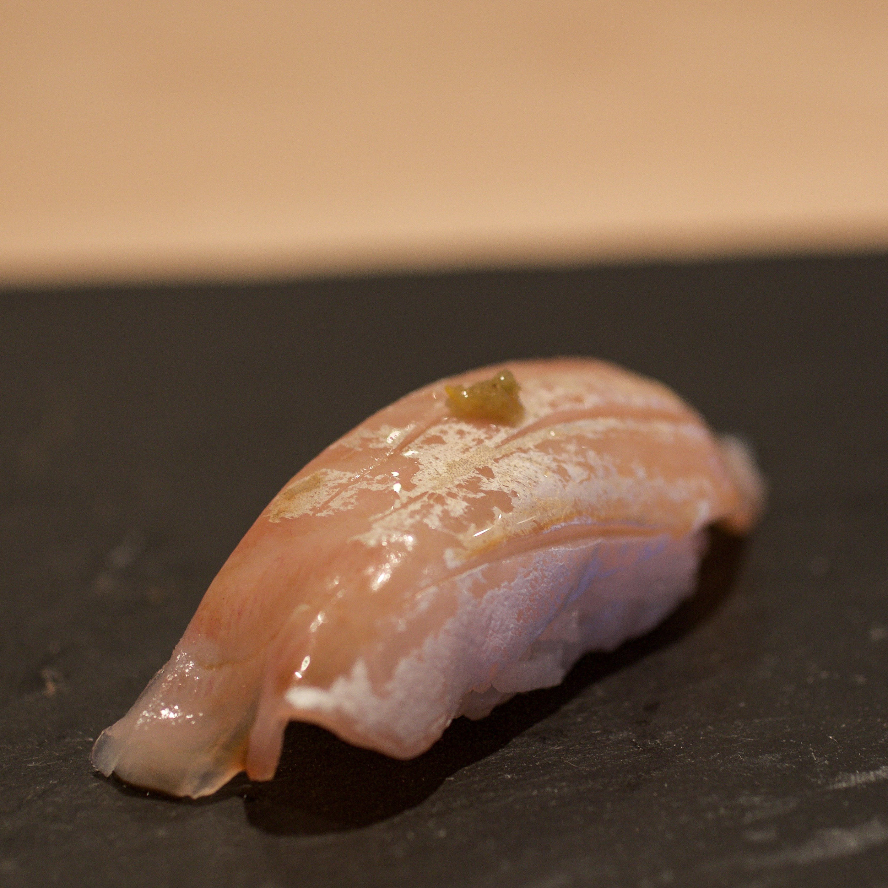

Sushi

Description
A recipie for raw fish on vinegar rice. It's really easy to follow, but difficult to master.
Please contact your nearest culinary expert for more information on edible raw fishes to avoid contracting salmonella.
Ingredients
- Seaweed (the right kind)
- Sushi rice - you can use this recipie but remember to use small grain rice and add sushi vinegar.
- Sushi-grade fish (those that can be eaten raw)
- Other decorative consumables e.g. cucumber, etc.
Steps
- Lay out a seaweed patch.
- Cover the seaweed with a layer of sushi rice.
- Place the fish and other decorative consumables as horizontal lines on the middle of the sushi rice.
- Roll the sushi.
- ......wait you don't know how to roll the sushi?
- Uhhhhh........
- Nevermind i give up just go follow this recipie i found instead.
Home